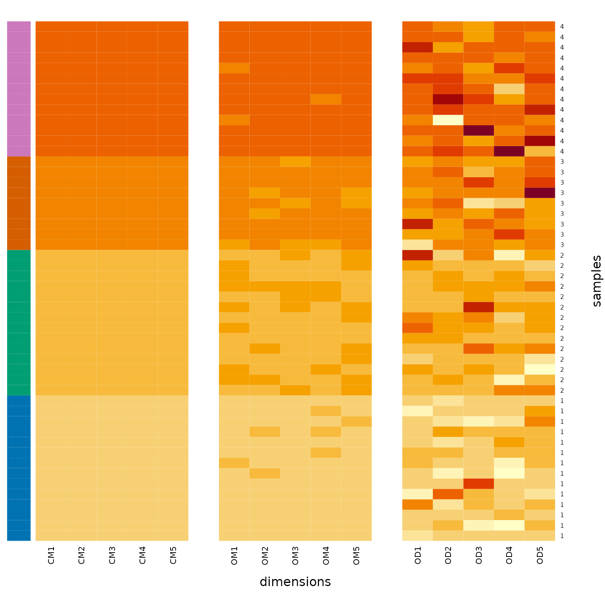
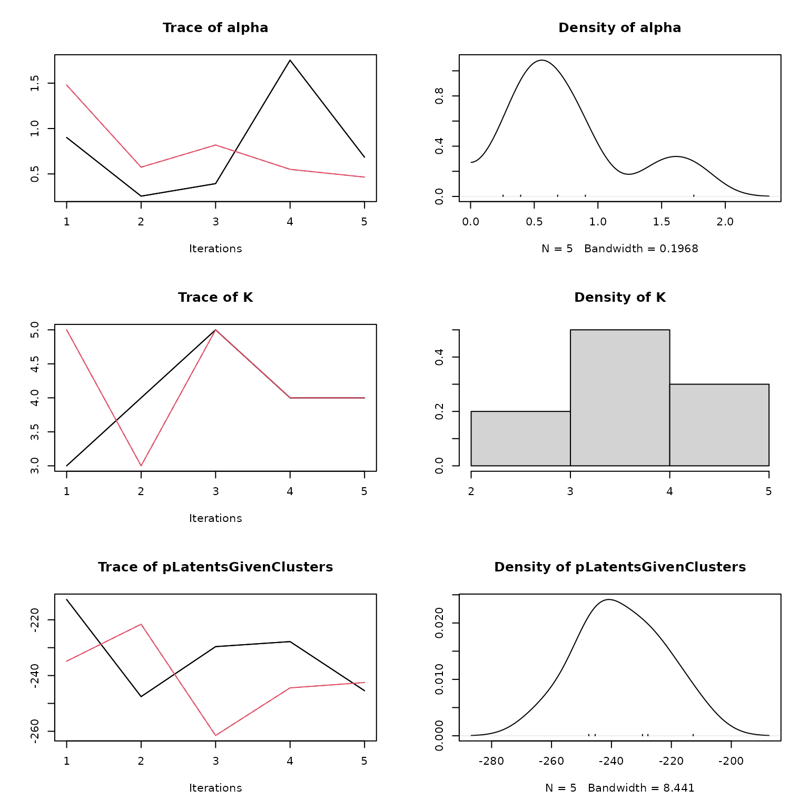
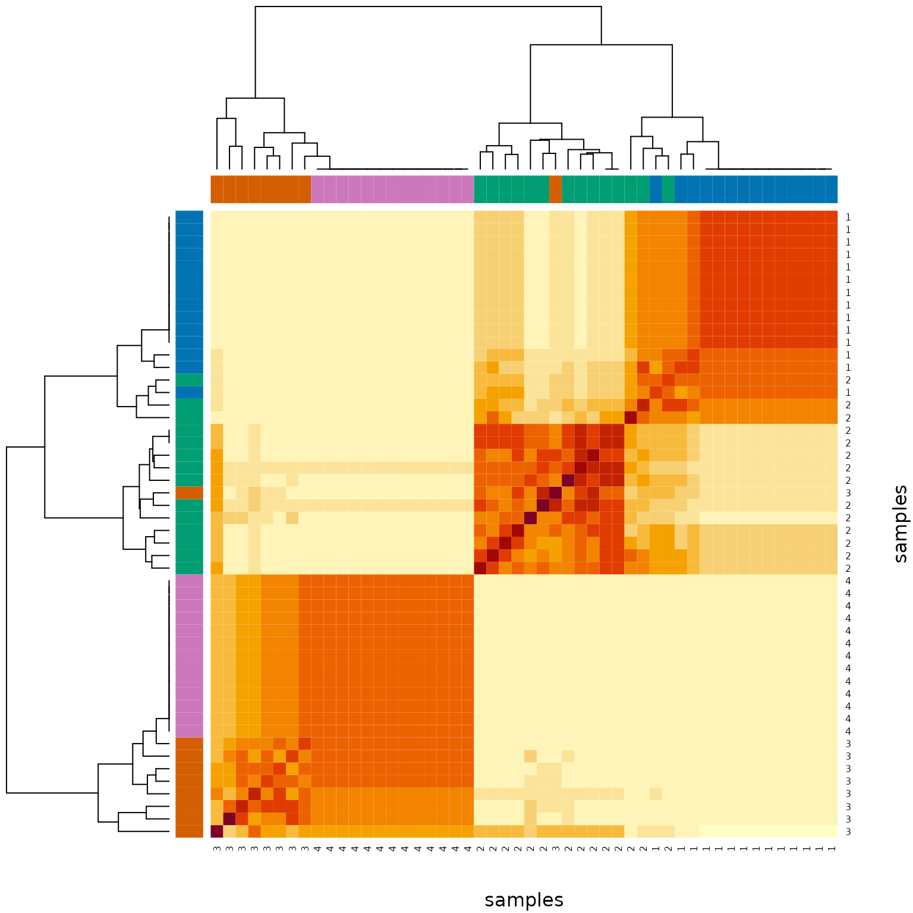
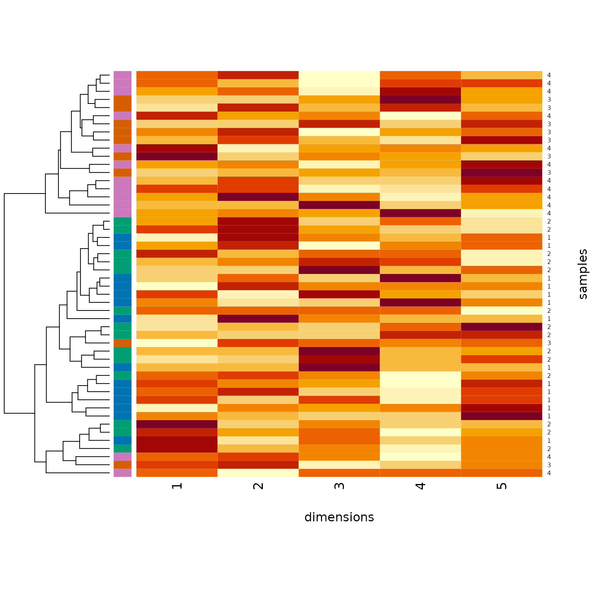

DPMUnc
DPMUnc.RmdThis is a brief vignette into how to use the DPMUnc package, which implements the model described in > Bayesian clustering with uncertain data > Kath Nicholls, Paul D W Kirk, Chris Wallace > doi: https://doi.org/10.1101/2022.12.07.519476
First, we simulate some data. 50 observations over 5 dimensions which fall into 4 classes. The different classes have different means, and each observation has its own mean value which is the class mean + some Gaussian noise. Finally each observation has some observed variance (obsVars) and its observed value (obsData) is the observation mean + Gaussian noise described by obsVars. The plot shows these 3 matrices - class mean on the left, observation mean in the middle, and observed data on the right. The colour on the left indicates the true class.
library(DPMUnc)
n = 50; d = 5; k = 4
set.seed(42)
classes = sample(1:k, n, replace=TRUE)
group_means = matrix(rep(classes, d), n, d)
observation_means = group_means + matrix(rnorm(n*d, sd=0.2),n,d)
obsVars = matrix(rchisq(n*d,1), n, d)
obsData = matrix(rnorm(n*d, mean=as.vector(observation_means), sd=sqrt(as.vector(obsVars))), n, d)
cols=c("#0173B2", "#029E73", "#D55E00", "#CC78BC", "#ECE133", "#56B4E9")
heatmap(cbind(group_means,NA,observation_means,NA,obsData)[order(classes),], Rowv=NA, Colv=NA, scale="none",RowSideColors=cols[classes[order(classes)]],ylab="samples", xlab="dimensions",labRow=classes[order(classes)],labCol=c(paste0("CM",1:5),"",paste0("OM",1:5),"",paste0("OD",1:5)))
This sounds like a complicated structure, but the first two matrices are assumed to exist for any regular clustering problem, the first being the cluster means and the second the observations. The more complicated data structure described here might occur when you average multiple noisy measurements - eg if you took repeated measures of blood pressure and pulse, and summarised by their mean this would be the observed data matrix, with the observation mean assumed latent. This model allows you to include information about the variability of those measurements to assist in inference.
DPMUnc requires some hyperparameters to be specified. We have found the following generally applicable, but do check if you get nonsensical results.
# The hyperparameters
alpha0 = 2; beta0 = 0.2 * mean(apply(obsData, 2, var)); kappa0 = 0.5
# the directory to store output
td=file.path(tempdir(), "DPMUnc")Run DPMUnc, only 2 chains and a short number of iterations (nIts). This is not how we would run in the wild, where we expect at least 3 chains at 10,000 iterations - more if needed for convergence.
We set nCores=1 to save processing power too, but by default, if you have the capacity, this would be set to nChains for speed.
DPMUnc(obsData, obsVars, saveFileDir=td, seed=1, nChains=2, nCores=1,
kappa0=kappa0, alpha0=alpha0, beta0=beta0, nIts=100) Look at the structure of the output. You may never need this, but included here in case you do:
list.files(td) # one directory per chain
#> [1] "1" "2"
list.files(file.path(td,1)) # outputs for each chain
#> [1] "alpha.csv" "clusterAllocations.csv"
#> [3] "clusterMeans.csv" "clusterVars.csv"
#> [5] "K.csv" "latentObservations.csv"
#> [7] "pLatentsGivenClusters.csv"You will look at the chains for convergence. You are looking for lines moving about a stationary distribution (ie the mean doesn’t keep changing) and that the different colour lines are all in about the same place. You can’t really tell here with only 5 stored samples (we ran 100 iterations, but DPMUnc thins samples to save only 10% of them, to limit autocorrelation, and then we discarded the first 50% as burnin). Typically you would have many more samples to make this judgement on. For now, we will proceed as if the chains had converged (if they hadn’t, you would need to rerun with higher nIts).
mcmc=read_samples(td, burnin=.5)
plot(mcmc)
We process the posterior similarity matrix (PSM) to call clusters using mcclust’s maxpear function. From the plot, the PSM has captured the true class structure pretty well. But when we use maxpear to summarise the PSM, it “sees” only 3 classes, choosing to combine classes 3 and 4 (pink and orange). Not great, but not bad for only 100 iterations.
psm=get_psm(td, trim=.5) # posterior similarity matrix, discarding first 50% of each run as burn in
heatmap(psm, RowSideColors=cols[classes],ylab="samples", xlab="dimensions",labRow=classes, Colv=NA)
clusters=mcclust::maxpear(psm)
table(inferred=clusters$cl, truth=classes)
#> truth
#> inferred 1 2 3 4
#> 1 14 3 0 0
#> 2 0 11 1 0
#> 3 0 0 8 13It is also arguably better than if we had simply used hierarchical clustering of the observed data ignoring the associated observed variance.
heatmap(obsData, RowSideColors=cols[classes],ylab="samples", xlab="dimensions",labRow=classes, Colv=NA)
Finally, it is good practice to clear up the temporary directory for a vignette.
unlink(td, recursive=TRUE)